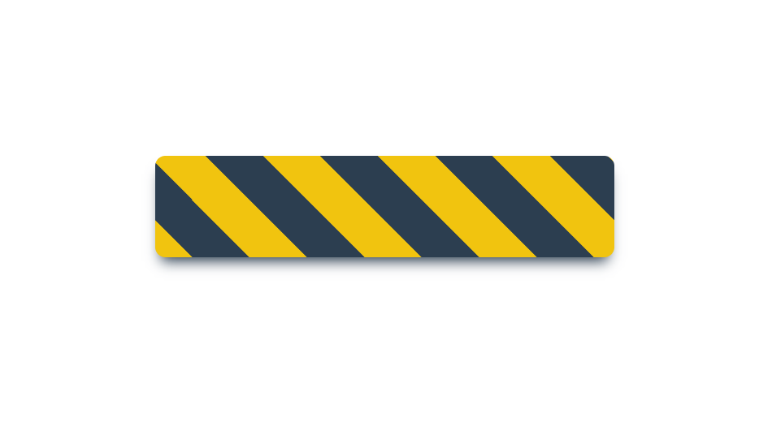

超级玛丽的 python 实现
在经过三四天的摸索，参考了Github上的一个大神的代码，也算是初步搭建起了自己的超级玛丽，下面就给大家分享一些自己踩的坑。
这里是Github上大神的代码，对超级玛丽的第一关进行了很好的还原。
推荐一下Github上一个pygame的游戏仓库
推荐一本《python和pygame游戏开发指南》，想要深入研究的朋友可以去翻阅一下
推荐一个2D游戏的素材网站
关于 pygame 模块可以查看官方文档，推荐一下CSDN上的中译版，毕竟官网的配色比较靓眼。或者看我前一篇博客的大致整理。
在开始之前你需要：
- 掌握 python 的基本语法
- 熟悉 pygame 模块的基本使用
由于pygame游戏的基本入门在之前一篇博客中有，这里就不再赘述
1. 画面和角色的导入
创建屏幕、从图片中导入Mario
1 | # 屏幕创建和初始化参数 |
1 | # 加载关卡图片 |
1 | # 导入Mario |
2. 角色的落地、跳跃和移动
在这之前要解决一下Mario如何才能站在我们定义的地面上
1 | self.acc = vec(0, GRAVITY) |
正如之前那一篇文章所说，角色的移动如果只是单纯的实现以像素为单位向左向右移动，无疑会很影响玩家的游戏体验正如以下
可以明显感觉到两个方向的运动的不同体验，下面是两个方向的代码可以简单的对比一下
1 | keys = pygame.key.get_pressed() |
对于角色的跳跃，一定要对其状态加以限制，让其必须在 “落地” 的状态下才能开始跳跃，不然就会产生下面的情况
为了避免这种情况，我们引入了一个self.landing状态，只有但其在为true的时候才能响应跳跃事件
1 | if keys[pygame.K_SPACE]: |
这里以上的所有大写常量参数都是定义在单独的配置文件中，方便修改。其参数的大小可以自行调节找出最合适的一组
对于这些运动的参数大家可以自己去调试调试，尝试一下不同的操作体验，也可以去文末的代码自寻
3. 角色的动作图片的切换
在提供的素材中是张表如图，我们需要自行裁剪下我们所需要的图片
这里可以在工具类中定义一个加载图片的方法
1 | def load_image(filename): |
从sheet中裁切图片
1 | # 裁切方法 |
图片的切换，一开始我是采用一帧换一张图片的方向，下面是代码
1 | # 定义一个方法来通过运动方向更换图片 |
但后来在运行的时候我发现了一个让人懵逼的效果
后来发现这是由于我的图片是每帧一换，快的让人反应不过来，产生了这种鬼畜的效果。
后来在参考大神的源码的时候，发现了一种控制图片切换速度的方法。不得不说大神还是很细节的，引入了常量系数和时间戳，通过Mario的移动速度来控制图片切换，让其更加自然平滑。下面是代码
1 | # 改进后的代码 |
4. 背景图片的滚动
本来背景的移动还是比较简单的，一如飞机大战和之前的那个jumpy的游戏：
只需要当角色的位置超过屏幕参数的某个值(如2/3)时，角色的位置不再相对的移动，而是将角色是位移反向的加到背景上，通过背景的后退就可以实现角色的相对移动。
但在超级玛丽中很明显是不适用的，因为整个关卡上定位了很多砖块，管道和阶梯，背景的后退只能改变Mario相对的坐标，但绝对的坐标是不发生任何变化的，这就很大程度上影响了Mario和一些物体的位置的碰撞的判断。
在这里就需要用到一种暂且称为镜头移动的技术，也就是对surface类的blit方法的参数的调整
1 | # 先定义好 镜头的位置移动规则 即self.viewpoint |
1 | # self.viewpoint是一个根据Mario的移动而改变参数的矩形 |
让我们来看一下上面两端代码的执行效果
很明显背景也移动了，Mario也移动了，但看上去好像是背景移动的太慢了追不上Mario。在调整了Mario的速度后发现问题也不是出在这里。
问题的根源在于：
我们将背景绘制在屏幕上，再将Mario绘制在屏幕上，这样Mario就是相对于屏幕的速度，那么他是肯定会永远超过屏幕的。这里我们需要做的是将Mario绘制到背景上，再将背景绘制到屏幕上
那么这就又出现了一个很魔性的效果，问题出现的根源就是我们每一帧都将Mario的状态绘制到背景上，每一帧都被我们背景保留了下来。不过这验证了我们之前的想法，至少我们的屏幕滚动跟上了
即然是这样，那我们就每次都弄一个新背景不就好了！一开始我是采用每一次都导入背景，新建并放大到屏幕大小，但这样工作量太大就会产生我们游戏中一个很讨厌的情景：掉帧。那么我们就可以用pygame.Surface.copy()这个方法，只在加载游戏的时候加载背景，每一帧只需要对背景进行拷贝一份就可以了
下面就是问题的解决方法
1 | def draw(self): |
5. 项目的重构
在完成了大部分的基础的工作之后，就不得不需要考虑一下整个项目的重新架构了。毕竟这个项目在我们开始着手之后才发现他的逻辑还是比较繁杂的，重新的构架可以帮我们更好的模块解耦，方便以后增加新的板块。
原项目的代码估计得有三四千行吧，构建可以说是很细致，大致划分了十几个文件。我这边也给代码大致分了一下类，理一下整个游戏的流程
main.py：整个游戏的主入口，控制整个游戏的循环sprites.py：定义整个游戏的所有精灵类及其所有方法level.py：规范整个关卡，创建所有精灵实体类，规定管道，台阶，砖块等物体的位置，对各种事件的判断settings.py：规定所有参数，方便调整tools.py：工具类，定义一些必要的方法，例如图片、声音、背景音乐的载入
6. 地面、管道和台阶
虽然在整个背景中存在这三样东西，但我们并没有他们的数据，也就不能进行碰撞检测等操作
这里我们定义了一个类来创建这三个实例对象，获得他们的矩形边框参数
1 | class Collider(pg.sprite.Sprite): |
然后在level.py中创建他们的实例并加入精灵组
1 | def set_ground(self): |
7. 碰撞的检测和处理
先创建一个方法来对三种精灵对象和Mario的碰撞检测
1 | def check_collide(self): |
然后就是对检测到的碰撞进行处理
这里的处理过程是比较复杂的，所以分为两个方向分别处理
1 | # 处理 x 方向上的碰撞 |
碰撞的处理是十分讲究细节的，这里就不过多的赘述，如果没有处理好就会产生很多奇怪的的东西如
8. 最后
到了这里相信大家已经搭建好了整个游戏的框架和基本逻辑，对于砖块、金币、蘑菇和乌龟，还有变大变小和火球效果这边就不赘述了，接着填入框架里就行了。
有了这些基础就可以进一步完善自己的超级玛丽了，你甚至可以对其进行魔改一番，来体验一下上帝视角的快乐
也可以将其改的十分刁钻，如之前的 猫里奥 游戏
最后可以用pyinstaller打成exe文件来分享给你的朋友们
9. 代码
这里我贴一下自己的源代码，因为很多细节都在之前提到了，这里就不加注释了
图片我这里贴一张第一关的地图，还有更多需要可以去Github仓库自取
main.py
1 | from level import * |
sprites.py
1 | import random |
level.py
1 | from sprites import * |
tools.py
1 | import os |
settings.py
1 | # 标题和窗口大小 |